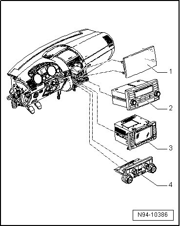
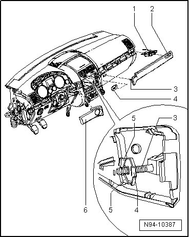
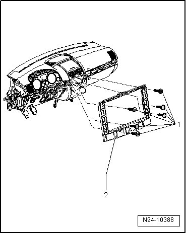
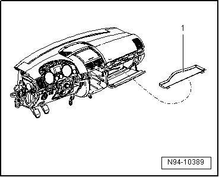
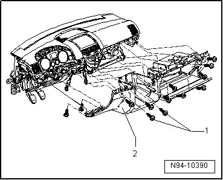
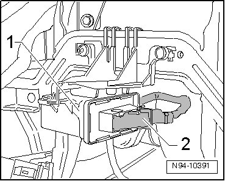
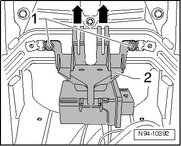
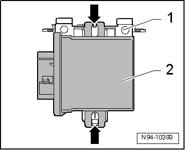
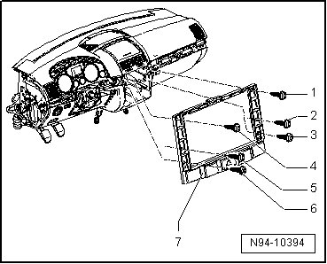

Headlamp Range/Cornering Lamp Control Module
HID Headlamps with Cornering Lamp, through 11.06
Headlamp Range/Cornering Lamp Control Module
Special tools, testers and auxiliary items required
• Release lever (T10039)
• Wedge (T10039/1)
• Removal of the steering wheel is not necessary. To improve clarity, the steering wheel is not shown in the following illustrations.
Removing
- Switch off ignition, switch off all electrical consumers and remove ignition key.
- In vehicles without radio/navigation system or without radio, pry cover - 1 - out of mounts using trim removal wedge (T10039/1).

- If necessary, remove radio - 2 -.
- If necessary, remove radio/navigation system - 3.
- Remove all switches in instrument panel center --> [ Center Instrument Panel Switch ] Service and Repair.
- Remove A/C control head - 4 -
- Remove side instrument cluster cover on front passenger side
- Remove cover in footwell on driver side.
• Two versions of panel - 2 - are installed in the Touareg, a panel with threaded pin - 3 - and clamping washer - 4 - or a panel without threaded pin and clamping washer.

• Clamping washer - 4 - is depicted as partially removed in the illustration for a better overview. While installed, clamping washer is accessible through radio system cut-out, however it is not visible.
• Clamping washer - 4 - is destroyed upon removal and must be replaced during installation.
- Using a small screwdriver through the radio system cut-out, pry up wing - 5 - of clamping washer - 4 - and pull off clamping washer - 4 - from threaded pin - 3 -.
- Pry panel - 2 - out of mounts using trim removal wedge (T10039/1) and unclip adjustment wheel housing - 1 - from panel.
- In vehicles with adjustment wheel housing lamp, disconnect harness connector from adjustment wheel housing - 1 - and remove adjustment wheel housing - 1 -.
- Pry decorative strip - 6 - out of mounts using wedge (T10039/1).
- Remove mounting bolts - 1 - and remove bracket - 2 - from instrument panel.

- Open glove compartment and remove lining mat - 1 - from glove compartment.

- Remove Glove Compartment Lamp (W6) --> [ Glove Compartment Lamp ] Service and Repair.
- Route all wiring harnesses which lead inward through lower section of instrument panel - 2 - so as to be able to remove lower section of instrument panel - 2 -.

- Remove mounting bolts - 1 - (13 mounting bolts total) and remove lower section of instrument panel - 2 - from instrument panel.
- Disengage harness connector - 2 - and disconnect harness connector - 2 - from Headlamp Range/Cornering Lamp Control Module (J745) - 1 -.

- Remove mounting bolts - 1 - and remove bracket - 2 - with Headlamp Range/Cornering Lamp Control Module (J745) in - direction of arrow -.

- Clip retaining hooks inward - arrows - and remove Headlamp Range/Cornering Lamp Control Module (J745) - 2 - from bracket - 1 -.

Installing:
Install in reverse order of removal, noting the following:
• Before installing, check whether a securing clip is installed in center of panel - 2 - as in the area of the threaded pin - 3 -. If this is not the case, a securing clip must be installed at this location.
• If a panel without threaded pin and clamping washer was installed in the vehicle and the panel is replaced by a version with threaded pin and clamping washer, the securing clip in the area of the threaded pin must then be removed before the installation.
• Use a new clamping washer - 4 - for the installation.
• After installing panel - 2 -, the new clamping washer - 4 - must be inserted to stop (do not turn!) in the depicted position.
- Tighten mounting bolts for bracket - 7 - in the following sequence.

• Mounting bolt 1
• Mounting bolt 6
• Mounting bolt 3
• Mounting bolt 4
• Mounting bolt 2
• Mounting bolt 5
• After installing a new Headlamp Range/Cornering Lamp Control Module, module must be coded --> [ Headlamp Range/Cornering Lamp Control Module, Coding ] HID Headlamps with Cornering Lamp, through 11.06 and then headlamp basic setting must be performed.
- Check headlamp for function.
- Check and adjust headlamp aim if necessary.
Level Control System Sensor without Level Control System
A vehicle level sensor is located at front axle (Left Front Level Control System Sensor (G78)) and (Left Rear Level Control System Sensor (G76)) is located at rear axle.
The vehicle level sensors are a component of headlamp range control system.
Level control system sensors transmit vehicle inclination in the form of a PWM signal (pulse-width modulated signal) to the Headlamp Range/Cornering Lamp Control Module (J745).
In order to generate this PWM signal, voltage is supplied to Left Rear Level Control System Sensor (G76) via two plus-wires and one Ground (GND) wire. Voltage is supplied to Left Front Level Control System Sensor (G78) via one plus-wire and two Ground (GND) wires.
Removing and installing Level Control System Sensor:
• If the level control system sensors are replaced, basic setting of headlamps must be performed.